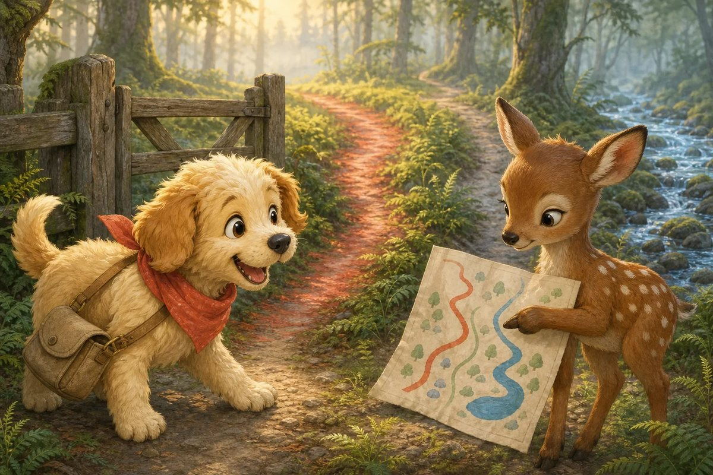
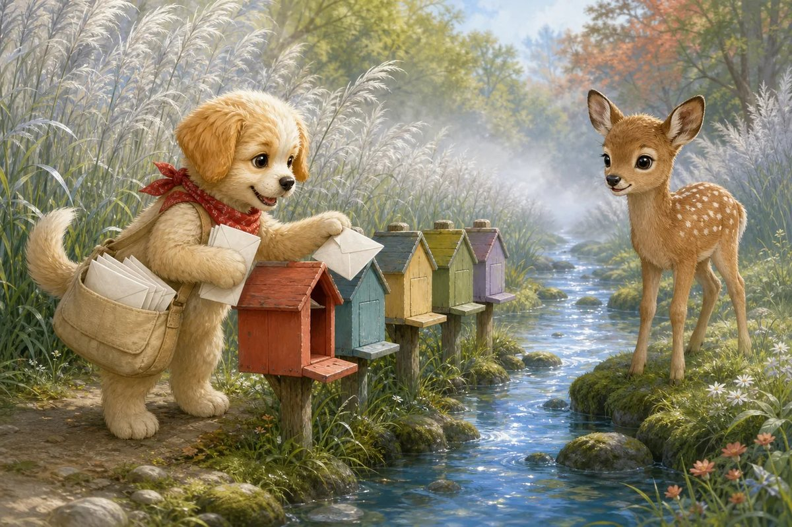
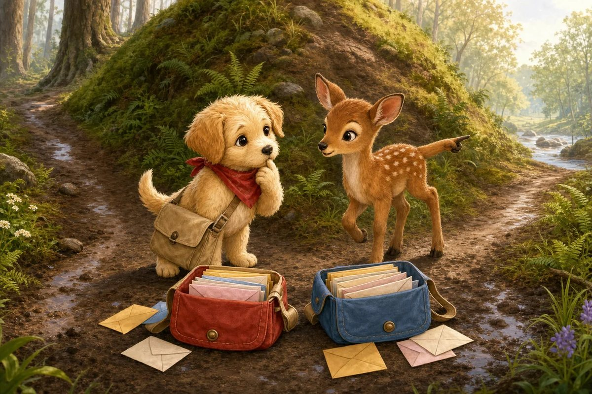
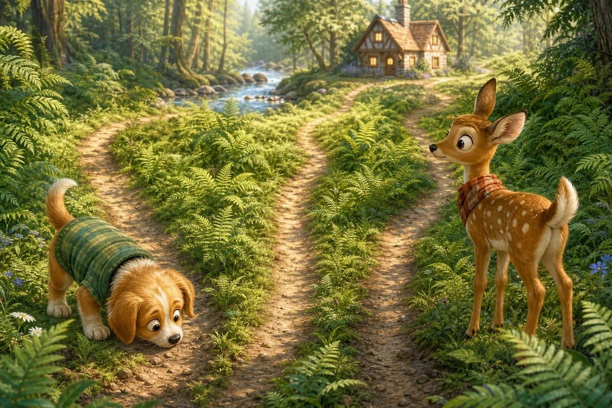
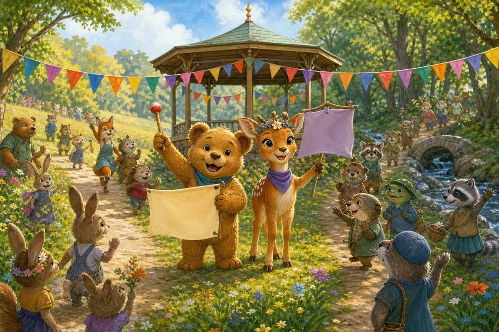

Biscuit-Bouncer wakes with his tail thumping like a parade drum. He has 9 invitations for homes beside the meadow and 6 for homes beyond the creek. “Easy!” he barks. “I will sprint the short road and be back before breakfast.”
Try it: How many invitations must Biscuit-Bouncer deliver altogether?
13
14
15
16
Show the answer
15. Make 10 by moving 1 from the 6: 9 + 1 + 5 = 15.

Page 2 of 9 · A Line Missing from the Map
At the forest gate, Ginger-Deer studies the map in silence. The bright red route is 35 metres, but a pencilled path to the creek homes adds another 27 metres. Biscuit nearly races on without noticing her raised hoof.
Try it: How long is the complete route in metres?
52
60
62
72
Show the answer
62. Add tens and ones: 30 + 20 = 50 and 5 + 7 = 12. Then 50 + 12 = 62.

Page 3 of 9 · The Quiet Creek Lane
They follow the missing line and find a lane tucked behind silver reeds. Of the 24 letters in Biscuit’s full postbag, 9 are now safe in little painted mailboxes. “Good spotting,” Biscuit tells Ginger. Her shy smile is brighter than the morning mist.
Try it: How many letters are still in the postbag?
13
14
15
16
Show the answer
15. Subtract 9 from 24. Take away 10 to get 14, then add 1 back to get 15.

Page 4 of 9 · Two Teams, One Promise
The creek path forks around a muddy hill. Ginger suggests two delivery teams, each carrying 8 invitations. Biscuit wants to dash ahead, but he remembers how easily the quiet lane vanished from his map. This time, he listens.
Try it: How many invitations can the two equal teams carry?
14
16
18
20
Show the answer
16. Two equal groups of 8 make 8 + 8 = 16.
Page 5 of 9 · The Ribbon Bridge
A loose plank blocks the next crossing. Ginger has a 75-centimetre ribbon and Biscuit finds another 25 centimetres in his satchel. Tied together, the ribbon can mark a safe one-metre boundary while they repair the plank.
Try it: How many centimetres of ribbon do they have altogether?
90
95
100
110
Show the answer
100. 75 + 25 completes the next hundred: 75 + 20 = 95, then 5 more = 100.

Page 6 of 9 · Three Ways Through the Ferns
Beyond the bridge are three fern paths. One is 18 metres, one is 25 metres, and one is 22 metres. Biscuit sniffs each trail while Ginger checks that the shortest one still reaches the final cottage.
Try it: How many metres long is the shortest path?
17
18
22
25
Show the answer
18. Compare the tens first. Eighteen has 1 ten, while 22 and 25 each have 2 tens, so 18 is shortest.
Page 7 of 9 · Ribbons for the Wagons
At the parade field, five little wagons wait without decorations. The friends have 40 ribbons and decide that every wagon should look equally splendid. Ginger ties careful bows while Biscuit holds the fluttering ends.
Try it: If 40 ribbons are shared equally across 5 wagons, how many go on each wagon?
5
7
8
10
Show the answer
8. Five equal groups of 8 make 40, so 40 shared by 5 equals 8.

Page 8 of 9 · Every Friend Arrives
The first drum rolls. Seventeen children gather beside 8 grown-ups, including every family from the hidden creek lane. Biscuit’s legs are muddy and his breakfast is long gone, but his grin could fill the whole field.
Try it: How many friends are gathered for the parade?
23
24
25
26
Show the answer
25. Add 17 + 8 by making 20: 17 + 3 = 20, with 5 left. Then 20 + 5 = 25.
Page 9 of 9 · The Best Kind of Fast
There are 30 seats beside the bandstand and 26 are filled when the music begins. Biscuit saves the last few for tired travellers. “Fast is useful,” he says, “but noticing people is how we all arrive together.” Ginger-Deer finally takes the proud first step at the head of the parade.
Try it: How many seats are still empty?
3
4
5
6
Show the answer
4. Count up from 26 to 30: 27, 28, 29, 30. That is 4 steps.
The end · Great maths
Nine questions, one story.
Try the story again without peeking, or print it and work the questions on paper. SnackPack Basic Math has the rest of the story shelf, daily practice and number games.